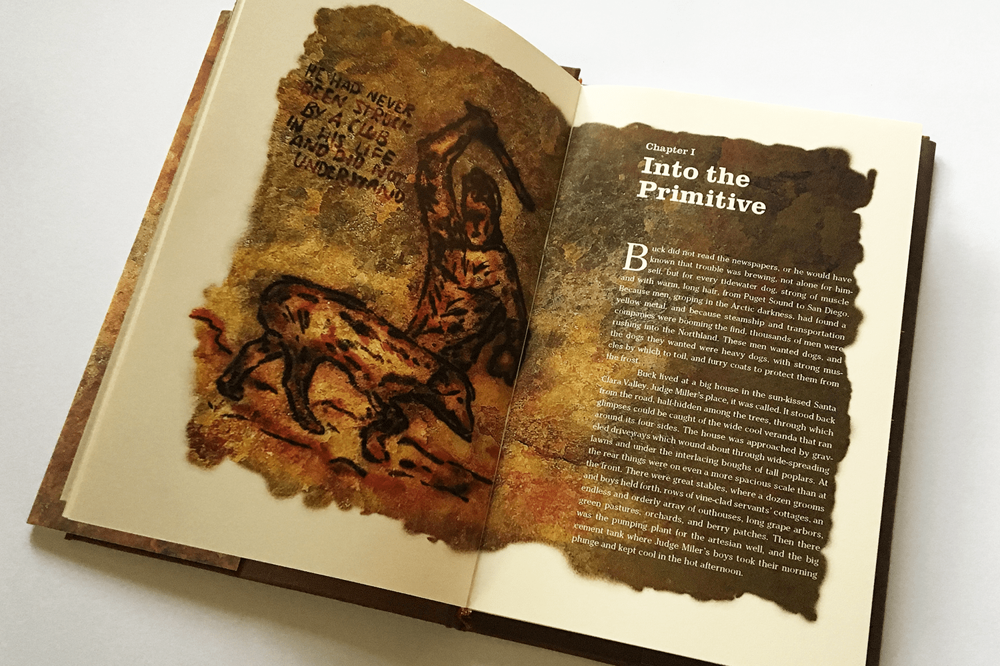
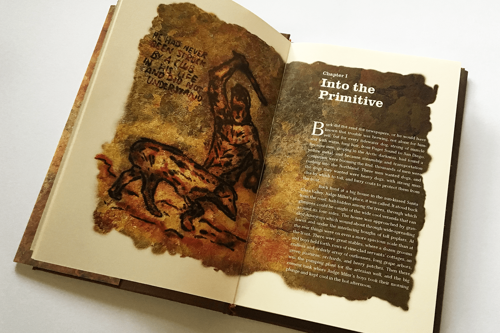

Call of the Wild
Tasked with producing a hand-bound, hard-cover copy of Jack London's Call of the Wild, I used cave drawing illustrations to emphasise themes of primitivism throughout the book. The illustrations mark the beginning of each chapter, and draw attention to a key scene or idea in the story.
Chapter Illustrations
Chapter One: Into the Primitive
"He had never been struck by a club in his life, and did not understand."
The book begins with the central character "Buck", a St Bernard and Scotch Shepherd mix, being stolen and thrown into the life of a sled dog in Alaska.
Chapter Two: The Law of Club and Fang
"Day after day, for days unending, Buck toiled in the traces."
Buck's journey continues as he begins to learn the harsh ways of life up in the north.
Chapter Three: The Dominant Primordial Beast
"In a flash, Buck knew it. The time had come. It was to the death."
A key chapter, Buck kills a rival dog in the pack to become the leader, fully embracing the primal life he has been sent in to.
Chapter Four: Who Has Won to Mastership
"Every dog knew, what had taken place behind that belt of river trees."
Buck and the rest of the pack suffer from the loss of many dogs to the harsh Alaskan conditions.
Chapter Five: The Toil of Trace and Tail
"'You poor devil' said John Thornton. And Buck licked his hand."
Buck finds his new master in John Thornton, who rescues him from his merciless former owners.
Chapter Six: For the Love of a Man
"As you love me Buck, as you love me."
Buck's bond with John Thornton grows stronger as the two face challenges and triumphs together.
Chapter Seven: The Sounding of the Call
"And it was for his great love of John Thornton that he lost his head."
After the death of John Thornton, Buck goes on to find a new life where he truly belongs, in the wild with a wolf pack.
Typography
Headings use the typeface Clarendon, chosen for it's slab-serif style and that it was very popular at the time of Call of the Wild's writing.
Cheltenham Book was used for the body copy, due to its readable nature and that it was released in the same year as Call of the Wild.
Research
The design process began with research on the book and its author Jack London. London's inspiration for the story was his time spent in the Yukon area in the late 1800s, among sled dogs and their owners.
Concept Development
While I knew I wanted to focus on primitivism in my illustrations, my concepts went through several iterations before settling on the cave drawing style.
Bookmaking
The hand-making process was difficult but very rewarding with a tangible end result!
 

Back to Top